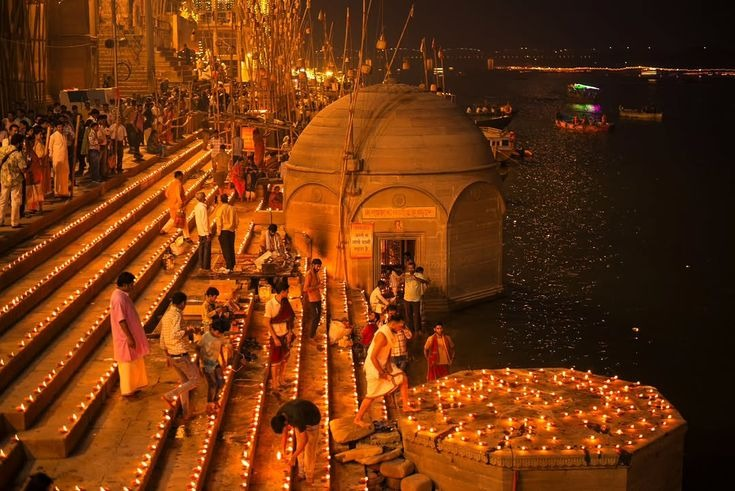
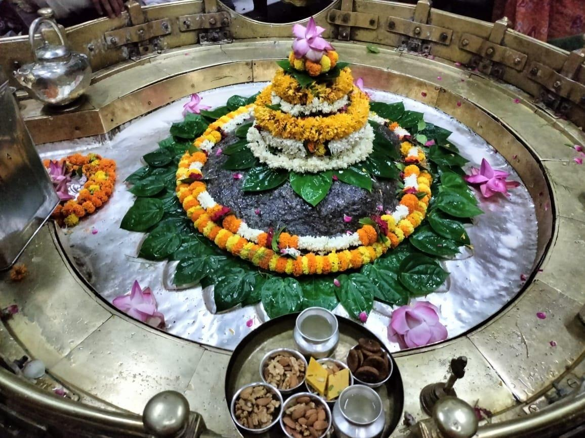

श्रद्धा • सेवा • काशी
अब काशी की धार्मिक सेवाएँ
काशी से आपके घर तक
काशी के पावन मंदिरों में चढ़ावा, माँ गंगा का पूजन, अन्नदान और विशेष धार्मिक सेवाओं से घर बैठे जुड़ें।
काशी से जुड़ी सेवाएँपावन परंपराओं का अनुभव
आसान बुकिंगघर बैठे अनुरोध भेजें
स्पष्ट जानकारीसेवा और शुल्क का विवरण
सहायता उपलब्धWhatsApp पर संपर्क
पवित्र सेवा • शुभ संकल्प
काशी की पावन सेवाएँ
अपनी श्रद्धा और संकल्प के अनुसार सेवा चुनें।
विशेष अवसर
देव दीपावली विशेष
मार्जन सेवा एवं दीपदान
काशी के पावन गंगा घाटों पर दीपदान और मार्जन सेवा के संकल्प से जुड़ें। आयोजन की तिथि, उपलब्धता और सेवा विवरण बुकिंग से पहले पुष्टि किए जाएँगे।


सेवा ही धर्म
नित्यान्नमयी अन्न सेवा
परिवार के मंगल की भावना और दिवंगत पूर्वजों की पुण्य स्मृति में अन्नदान समर्पित करें। योगदान और सेवा की वास्तविक व्यवस्था पहले जानें।
भक्ति का अर्पण
चढ़ावा सेवा
काशी के चयनित प्रसिद्ध मंदिरों में अपनी श्रद्धा के अनुसार प्रसाद और चढ़ावा अर्पित करने हेतु अनुरोध भेजें। मंदिर और सामग्री की उपलब्धता पुष्टि के अधीन है।

सरल प्रक्रिया
सेवा कैसे बुक करें?
धर्म • इतिहास • आस्था
काशी की दिव्य विरासत
काशी के मंदिरों की परंपरा और आध्यात्मिक महत्त्व को जानें।
स्पष्ट और विश्वसनीय
बुकिंग नियम एवं शर्तें
सेवा का अनुरोध भेजने से पहले इन महत्वपूर्ण बातों को पढ़ें।